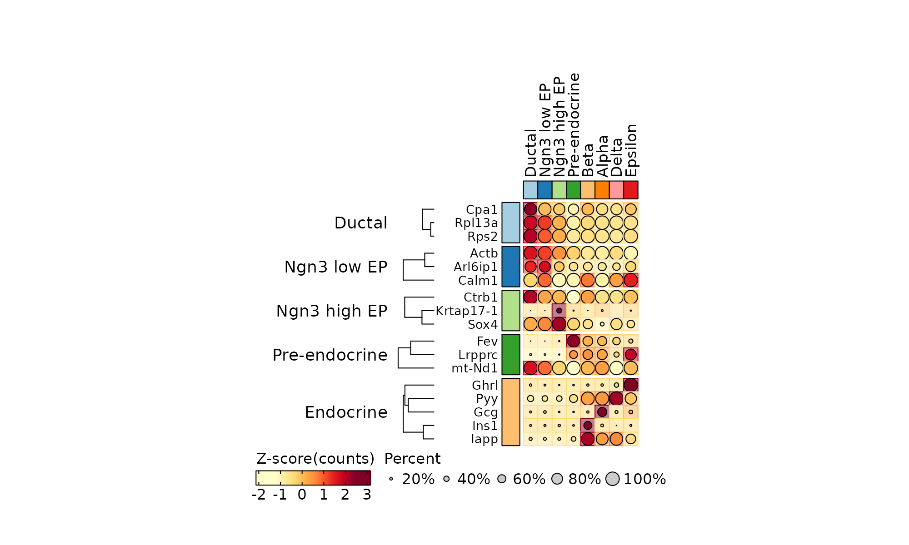

ExpDotPlot
Usage
ExpDotPlot(
srt,
features = NULL,
feature_split = NULL,
cell_split_by = NULL,
aggregate_fun = mean,
slot = "counts",
assay = "RNA",
exp_method = c("zscore", "raw", "log2fc", "log1p"),
lib_normalize = TRUE,
libsize = NULL,
heatmap_palette = "YlOrRd",
feature_palette = "Paired",
cell_palette = "Paired",
add_reticle = FALSE,
cluster_features = FALSE,
cluster_cells = FALSE,
grid_size = 0.4
)Arguments
- srt
A
Seuratobject.- features
A vector of gene names to plot.
- feature_split
A vector of group names for features.
- cell_split_by
Columns used to calculate cell expression. One heatmap per column name.
- assay
Assay used to calculate the expression.
- exp_method
Method used to calculate cell expression.
- heatmap_palette
Heatmap expression palette.
- feature_palette
Feature groups palette.
- cell_palette
Column palette.
- cluster_cells
- grid_size
size for each dot.
Examples
library(dplyr)
data(pancreas_sub)
ExpDotPlot(pancreas_sub,
features = c(
"Sox9", "Anxa2", "Bicc1", # Ductal
"Neurog3", "Hes6", # EPs
"Fev", "Neurod1", # Pre-endocrine
"Rbp4", "Pyy", # Endocrine
"Ins1", "Gcg", "Sst", "Ghrl" # Beta, Alpha, Delta, Epsilon
),
cell_split_by = c("CellType", "SubCellType")
)

pancreas_sub <- RunDEtest(pancreas_sub, group_by = "CellType")
#> [2022-10-23 17:14:42] Start DEtest
#> Threads used for DE test: 1
#> Perform FindAllMarkers(wilcox)...
#>
|
| | 0%
|
|==============================================================================================================| 100%
#>
#> [2022-10-23 17:15:06] DEtest done
#> Elapsed time: 23.53 secs
de_filter <- filter(pancreas_sub@tools$DEtest_CellType$AllMarkers_wilcox, p_val_adj < 0.05 & avg_log2FC > 1)
de_top <- de_filter %>%
group_by(gene) %>%
top_n(1, avg_log2FC) %>%
group_by(group1) %>%
top_n(3, avg_log2FC)
ExpDotPlot(pancreas_sub, features = de_top$gene, feature_split = de_top$group1, cell_split_by = "CellType")